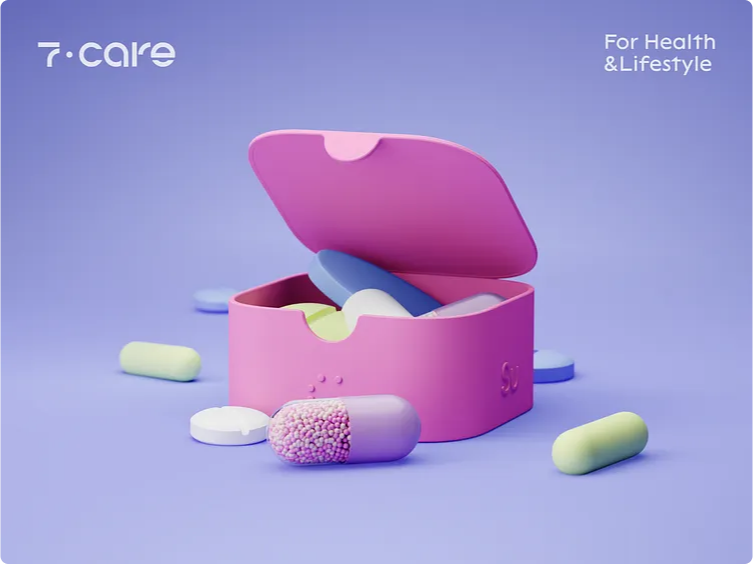
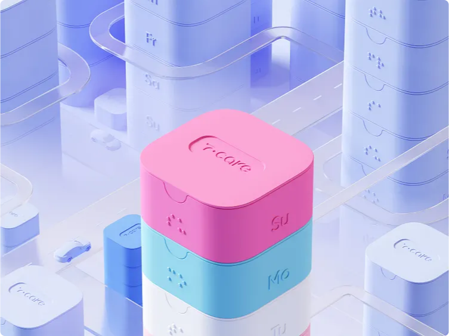
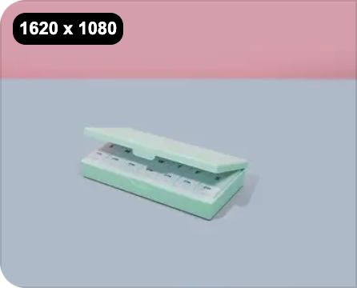
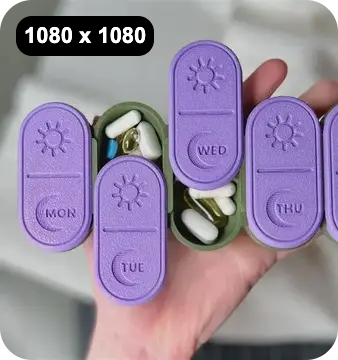
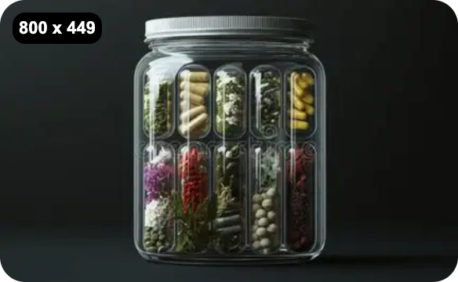
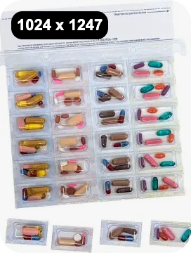
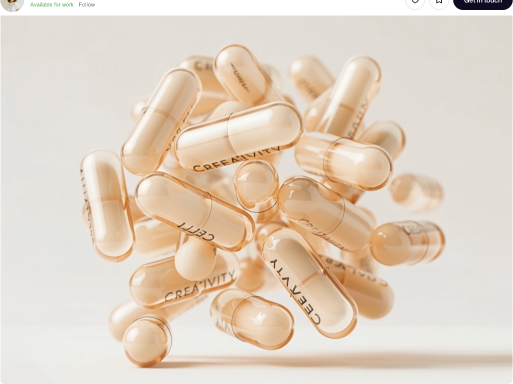
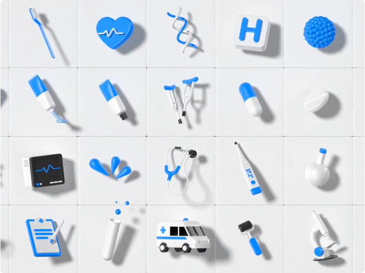
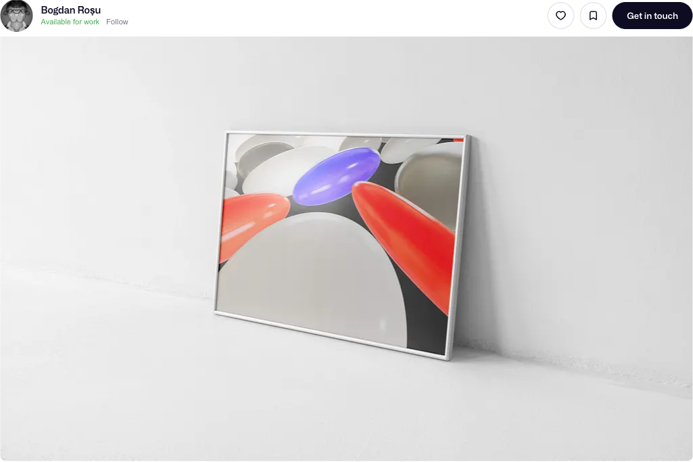

06 Flower / petal pill case: compartments radiate around a centreBing Images, query 'AM PM pill case minimal design' (Amazon listing)
C · Pill boxes, AM/PM, pods

07 7-care (Outcrowd): soft pink 3D box, lid open, mixed capsules spillinghttps://dribbble.com/shots/14567725-Pill-Case-Design-7-Care

08 7-care: stackable rounded cubes, one per day (Su, Mo)https://dribbble.com/shots/14587234-Package-Design-7-Care

09 Port and Polish: minimal mint AM/PM pill boxhttps://portandpolishco.com/products/mint-am-pm-pill-box (via Bing Images)

10 3D-printed oval pods joined in a ring, very clay-likehttps://www.etsy.com/listing/4311465973/cute-pill-box-organizer-3d-printed (via Bing Images)
D · Jars / apothecary
11 Glass jar filled with mixed capsules (stock, AI)https://www.freepik.com/premium-ai-image/vitamins-supplements-glass-jar-with-floral-accents_417785506.htm (via Bing Images)

12 Clear jar with capsules sorted in vertical columns (stock, AI)https://www.dreamstime.com/explore-array-herbal-capsules-clear-jar-showcasing-nature-s-remedies-holistic-wellness-generative-ai-illustration-image350092081 (via Bing Images)
E · Blister cards

13 Multi-dose blister card, each bubble holds a mixed sethttps://www.amazon.co.uk/Controlled-Medication-Perforated-Individual-Blisters/dp/B07Y5QFHYG (via Bing Images)
F · 3D / clay pills and icon styles

14 Cluster of cream capsules floating together (3D render)https://dribbble.com/shots/27271668-3D-Pills-Animation

15 Pale-blue soft 3D pharma icon set (style reference)https://dribbble.com/shots/16229116-Pharma-3d-illustrations-for-UI-projects

16 Colour-blocked pills in a frame (3D render)https://dribbble.com/shots/27053290-3D-Mondrian-Pills